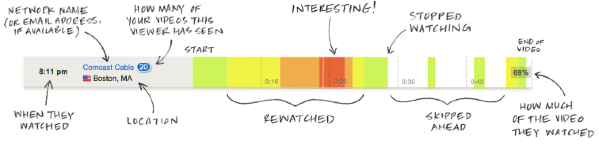
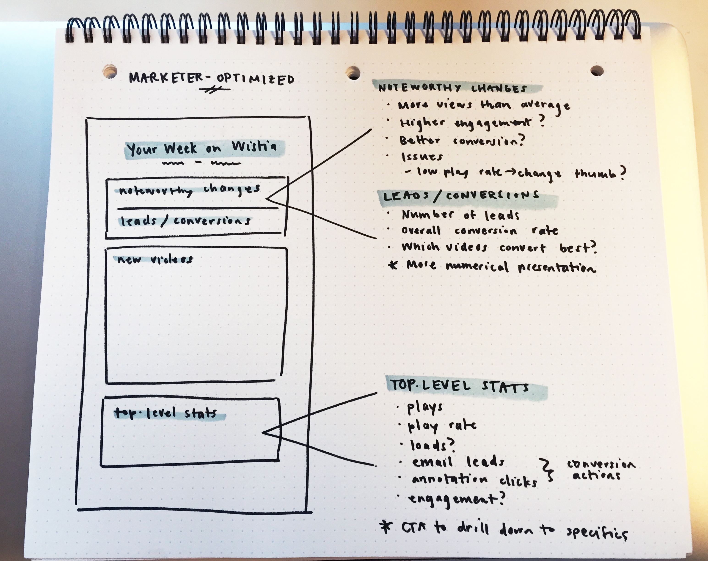

Introduction
My experience at Wistia began in July 2013 as a co-op conducting user research for six months. This was my first foray into the world of product and laid the foundation for a future in product design. It fed my curiosity and love for understanding users, but also showed me that I wanted to go beyond just analyzing problems. I returned to Wistia in June 2015 to work on product design, and because Wistia’s product team is quite small—I work with our lead and only product designer—I’ve had the opportunity to take on some really exciting projects.
Wistia's mission is to help businesses do more with video. That boils down to providing professional video hosting with HD video delivery, marketing tools, and analytics to help our users understand their viewers. During my first stretch at Wistia, one of the main takeaways my research uncovered was that analytics (known as “Stats” in-app) is the single most important feature to our customers. Knowing who watches your videos and exactly how they watch them is a huge value creator and an area which we want to continually improve. I recently worked on three projects with the shared goal of taking Stats to the next level: redesigning heatmaps, creating Audience, and making the Stats Report.
Heatmaps 2.0
The heatmap has long been the atom at the center of the Wistia Stats system. Every time a Wistia-hosted video is viewed, it generates a heatmap which shows exactly which parts of the video the viewer watched, skipped, and rewatched. Heatmaps 1.0 also provided basic contextual details about its viewer and, if a viewer engaged a Wistia email capture gate, displayed their email address.
For a lot of Wistia users, these heatmaps were a gamechanger. A salesperson could upload a demo video to Wistia, add an email capture gate, and watch the heatmaps roll in—some with new email addresses attached! They could see which parts of the video new leads found most/least interesting and use the email to follow up. Great!
The Problem
Still, we felt there was an opportunity to enrich heatmaps with even more data to provide our users with more context. New contact enrichment APIs like Clearbit make it possible to turn a single email address into a whole lot more, from job title to Twitter handle. There was, however, one obvious roadblock: our svelte, 960 by 60 pixel heatmaps were already at capacity. There simply wasn’t any more screen real estate for new information.
The challenge here was three-fold. First and foremost, heatmaps needed a more flexible design that would account for much more data—both our immediate requirements and some vaguer future possibilities. Second, we had to decide which data to include and prioritize. Third, the design should create a unified heatmap system to replace the disjointed versions that existed throughout the app. The primary constraint was space—because heatmaps are so ubiquitous, major parts of the interface were essentially built around them at their current dimensions.
The Process
We started by deciding what information to add. Wistia’s lead product designer, Joe, likes to say that the utility of a design is the average of all its components, and I’ve come to find myself repeating this often. Including more, potentially less useful information here would dilute the utility of the truly crucial components. It was also important to consider the limitations of services like Clearbit—they’re not always successful in finding each piece of data connected to an email, and the more pieces we included in the design, the more uncertainty we introduced. In the end, we chose to incorporate first and last name, company, job title, and avatar photo as well as device type and conversion events from Wistia.
My next step was to account for the aforementioned uncertainty. The level of detail provided by a heatmap could vary from totally anonymous to fully identified, and everything in between. I needed to design a system that would work for all of these states. The idea underlying these early concepts was that the bubble color served as a quick indicator of a heatmap’s level of identity. A grey bubble signified an anonymous view, a blue bubble was a view identified by at least an email address, and an avatar was obviously an identified viewer.
These designs intentionally forego the typical anonymous silhouette avatar. Though we were unable to test exactly how many heatmaps would have an avatar, we expected it to be a small percentage. I needed to designate a space for these avatars, but didn’t want the majority of heatmaps to have a redundant placeholder image in that space. Instead, I chose to use the single piece of information guaranteed to be known across heatmaps: the total number of your videos that viewer had ever watched. This gives a good estimate of viewer engagement—knowing if a viewer has watched one versus twenty-one of your videos is far more actionable at a glance than a dummy avatar.
These designs weren’t working, however, because they were too big (>960x60px) and yet not big enough to include all of the spec’d information. Cramming three lines into that little space felt cramped and made it harder to scan a page full of heatmaps quickly.
The Solution
The final design maintains the identity system of its predecessors but fits the original dimensions thanks to the addition of an expanding drawer. When closed, a heatmap displays two lines of the most valuable available information and reveals the rest upon expansion. Moving the timestamp outside of the heatmap helps to further declutter and increase readability, making it easier for users to parse. Changing the avatar from a bubble to a square supports the smaller size by eliminating the need for padding and also feels decidedly more true to Wistia’s highly geometric UI style. The mobile icon makes it easy for users to quickly get a sense of where their audience is watching video.
Beyond the identity system, I also needed to rethink the system for heatmaps’ layout throughout the app. Three variations already existed but lacked a unifying thread. Below is a comparison of the original layouts and the redesigned system.
Audience
Wistia has always believed in using video to build an engaged audience over focusing solely on views and virality. The beauty of video marketing is its ability to reach through a screen and say “Hey, we’re just a bunch of humans too.” We’ve talked about this quite a bit in our external learning resources, but until recently, didn’t have a great reflection of our audience-centric approach in the app itself.
The Problem
Our Turnstile email collector is extremely valuable in helping Wistia users identify their viewers and grow an audience. However, we had no central place for users to see this audience—viewers simply appeared as heatmap events scattered throughout video stats pages. It was hard to visualize the viewers and leads videos were generating and, by proxy, the value that Wistia provides. So we set out to find a way to help Wistians practice what we preached—focus on using video to understand and grow your audience.
The Process
The initial idea was to create a Leads page to view the email addresses your gated videos had collected, but things quickly evolved as we started sketching. Leads would undeniably be valuable on its own but felt like an incomplete picture. Viewers tagged with email addresses were only one part of a larger system. In fact, a Wistia audience can consist of three main buckets: anonymous viewers, viewers identified by Turnstile email gate, and viewers identified by other sources such as clicking a video link in an email or API tagging. When we sat down to sketch Leads, we kept returning to this system. If we really wanted users to be able to visualize and grow their audience, they’d need more than a list of emails—we’d need to provide more context.
Those identified by gated videos were arguably the most actionable as new sales leads, but the other buckets had compelling use cases as well. As one user we interviewed put it, studying the viewing behavior of anonymous viewers who chose not to submit their email address could be just an informative as studying those who did. What videos had the anonymous viewers watched compared to those who converted? One could leverage both sets of data to move audience members from one bucket to the other, deeper in the funnel.
Once we’d established this scope, the main challenge was designing the mechanism to filter audience based on the three buckets while clearly distinguishing between them. Viewers tagged by email versus viewers tagged by other sources was a particularly nuanced and tricky distinction. I brainstormed a number of different filter interfaces, but critique revealed that most either didn’t perfectly suit our functional purposes or felt too obtrusive.

The Solution
This tabbed design stuck out. It managed to set context with high-level numbers and fit our filter functionality without being clunky. We ran with it and started testing with users to uncover the weak spots.
The design performed pretty well in testing, but as we’d suspected, there was still some ambiguity around “Identified viewers” and “Turnstile entries.” We considered a few solutions, from combining the two buckets entirely to simply adding a tooltip with an explanation. In the end, Joe came up with an alternative that incorporated the best of both worlds.
Stats Report
If you use enterprise SaaS products, I’d wager that the majority have some sort of daily/weekly/monthly summary email. It may come as a surprise then that Wistia, an 8+ year old enterprise product whose analytics feature is one of its most beloved, had no such email in 2015. The reason? Simply put, those emails tend to suck. While the idea is compelling, the execution usually disappoints. When we asked some of our teammates and customers which products' summary emails they actually opened—let alone acted upon—a dismal few could name even one.
The Problem
Still, the idea remained compelling! Wistia customers had requested such an email, and we couldn’t help wondering: could Wistia create a product summary email that was truly valuable for our users? My task was to answer this question and hopefully design an email to help users maintain a better high-level understanding of the activity happening around their videos (without having to constantly log in).
The Process
The best part of this project was knowing it was experimental from the start. The primary objective was to validate the need for this kind of email—it was totally OK for me to come back and say, “Nope, bad idea.” This objective coupled with the inherent limitations of designing for email (keep it simple, stupid!) meant that my process should really focus on content and user testing. I needed to hone in on what information people would want in this email.

For the design, I chose a modular layout for two reasons. First, it felt visually coherent with our existing marketing emails such as the Wistia Blog Digest. Second, and most importantly, it was an ideal template for user testing and iteration. I could design a number of information modules, test them, and then omit, rearrange, and add modules as necessary.

The Solution
We ended up with a four-module design optimized for two of our core customers: marketers and videographers. The first module, Noteworthy Happenings, is a place to surface significant activity changes or "data snacks" like a spike in views. Account Trends helps users keep a pulse on high level metrics from week to week. Latest Leads summarizes new emails that were collected using video email gates and serves as a gateway to the new Audience page. Finally, Top Videos shows the top performers for the week.
This design omits a section we initially thought to be crucial: New Videos. User testing revealed an interesting pattern—most users closely monitored new videos in the first day or two after uploading. By the time they'd receive this email at the end of the week, the data for new videos would be old news.
The graphic choices were largely made by balancing technical feasibility and UX payoff. In lieu of engineering-intensive components like custom-generated images, I opted for text and a small number of reusable icons. Video thumbnails were the exception because they are so helpful in aiding user recall. The result is a visual design that hopefully feels lightweight, easy to digest, on brand, and compelling.
For production, we released a pared-down version of the report—just Account Trends—in the spirit of shipping things quickly and collecting more user feedback. We hypothesized that if our final design choices were correct, users would be writing in requesting the sections we've yet to release. In the weeks since the beta launched, our hypothesis has proved correct! Top Videos is the most hotly requested section, and next on our to-do list.
Early metrics are also promising—the email has seen a whopping 57.6% average open rate (compared to a 21.5% industry average according to Mailchimp) and almost no unsubscribes thus far. As we’d expected, click through rate is not as high as these other numbers because one of our goals was to surface useful account information in a direct form that may obviate the need to click through and log in every time. Even so, our 4% clickthrough rate outperforms the industry average of 2.44%. It's a strong starting point, and I expect the Stats Report will continue to evolve into an even more useful tool as we continue to build out the full design.
Takeaways
After months of hard work alongside the talented Wistia team, we released these three features together as a major Stats update at the beginning of 2016. It's hard to quantify how much I learned over the course of these projects, but I can pretty easily point to why I enjoyed them so much: systems. I love the challenge of designing with a systems perspective—these projects were essentially one giant puzzle (comprised of slightly smaller puzzles). It’s an incredibly interesting constraint and makes the solution that much more satisfying. My work at Wistia has allowed me to flex my muscles designing within an existing system, and even further, it's given me the opportunity to design entirely new systems as well.